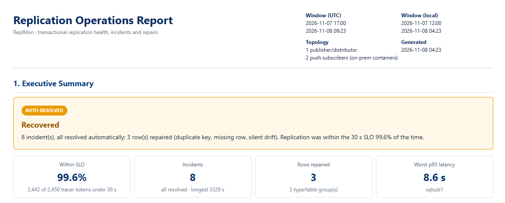
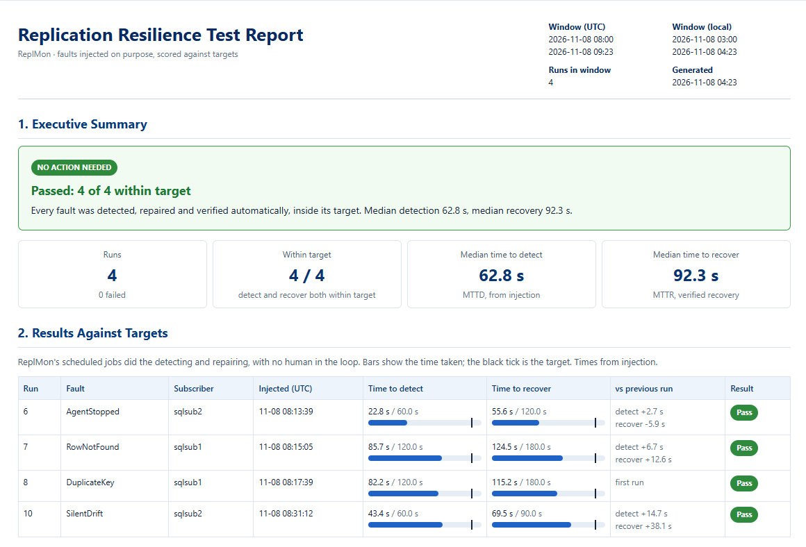

Self-Healing Transactional Replication: sample reports
Generated by ReplMon from the lab: one publisher/distributor and two push subscribers on SQL Server 2022 under continuous load. Every section is expanded.

Operations report
Real incidents over 16 hours: latency against a 30 s SLO (99.6% within), what ReplMon concluded and did, and every repaired row before and after.

Resilience report
Four faults injected on purpose, each scored against its target: all detected, repaired and verified automatically, with where the time went.
Source and build scripts: github.com/lachungo/sql-server-self-healing-replication · Louis Achungo